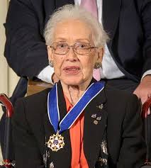
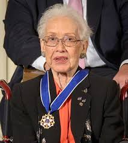

3D Printing for "Dummies"
How to get started with our 3D printer
Overview of the 3D printing workflow
xxx
- 1910 - Women in Norway got the rights to vote at Kommunevalg
- 1910 - NTH was established
- 1913 - Women in Norway got the rights to vote at Stortingsvalg
- 1919 - Margot Holtan (1885-1986) and Randi Holwech (1890-1967) are the first females graduated as Sivilingeniør at NTH (NTNU)
- 1992 - Ingeborg Sølvberg (1943) is the first female IT professor at AVH (NTNU)
- 2019 - Anne Borg is the first female headmaster at NTNU
Finding a model on the internet
Thingiverse.com
PruzaSlicer software
model - download

 


PruzaSlicer local config
About settings, get the desired quality
.jpg){kind=link}
- She is credited with being the world's first computer programmer, on the first general computor.
- Lovelace detailed applications for the Analytical Engine that relate to how computers are used today.
- Lovelace is remembered annually on Ada Lovelace Day, held on the second Tuesday of October.
Export the file to .gcode
copy it to the SD card
- Computer scientist and programmer and Admiral in the United States Navy.
- In 1944, she created a 500-page Manual of Operations for the Automatic Sequence-Controlled Calculator for the computer.
- Hopper is also the inventor of the compiler and coined the term Compiler to describe it. This invention influenced other computing developments, like code optimization, subroutines, and formula translation.
At the 3D printer - how to get started
xxx
- Fillament - cut the end
- Preheat
- Thread the fillament into the head - await the stripe of fillament, accept is it appears
- Navitate to your file in the SD card
- Start print
At the 3D prointer - good practices
- Make sure the print board is clean, use wiper if not
- Don´t put your fingers on the print board, fingerprints will prevent the filler to stick properly
- Use the "metallskrape" when removing the finished 3D print from the board
- When finished, remove the fillament and put it back to the plastic bag. It needs protetction from "fukt"
- Turn of the 3D printer power, remove excess fillament and garbage from the printer area and all equipment in a state that will work for the next one"
IF stuck - whome to ask....
Takes Humans to the Moon
- American computer scientist and systems engineer who led the Software Engineering Division of the MIT Instrumentation Laboratory
- NASA credits her with coining the term “software engineering.”
- Hamilton worked on software development for Apollo 11, the first spacecraft to complete a successful mission that placed humans on the moon in 1969.
- Hamilton's insistence on thorough testing is credited with the mission's success and safety of its astronauts.
- Hamilton received the NASA Exceptional Space Act Award for technical and scientific contributions in 2003 and the Presidential Medal of Freedom award in 2016.
Adele Goldberg
1945 -
Develops the Blueprint for Graphical User Interfaces
- Computer scientist with PhD in information science from the University of Chicago in 1973
- Developer of Smalltalk during 1970s which was used to prototype the WIMP (windows, icons, menus, pointers) interface at Xerox PARC, the cornerstone for today’s modern graphical user interfaces
- She has served as president of the Association for Computing Machinery (ACM) from 1984 until 1986 and has received numerous awards for her contributions to computing.
Stephanie Shirley
1933 -
Founds Software Firm Devoted to Hiring Women
- Entrepenour who in 1962 founded her software firm Freelance Programmers which initially employed only women
- For a lifetime of entrepreneurship promoting the growth of the UK software industry and the advancement of women in computing
- Creating programs dedicated to studying technology's impact on social and ethical issues
- Shirley is former president of the British Computer Society and a Fellow of the Royal Academy of Engineering. She has given away most of her wealth to philanthropic causes
Elisabeth Feinler
1931-
Improves internet with DNS
- 1972-1989 the director of ARPANET, Defense Data Network, and the Network Information Center
- Her group developed the first Internet “yellow-” and “white-page” servers as well as the first query-based network hostname and address (WHOIS) servers
- Introduces the Domain Name System protocol (DNS) . She’s the one to thank for the dot coms, dot nets, and dot govs used daily
You can be a role model!
Believe in your self
Follow you passions
Make a difference
Take the credit of your achievements!
Sources used in this presentation
Thank you for your attention
Marita Midthaug

Lead analyst IT
Equinor